The capital of France is
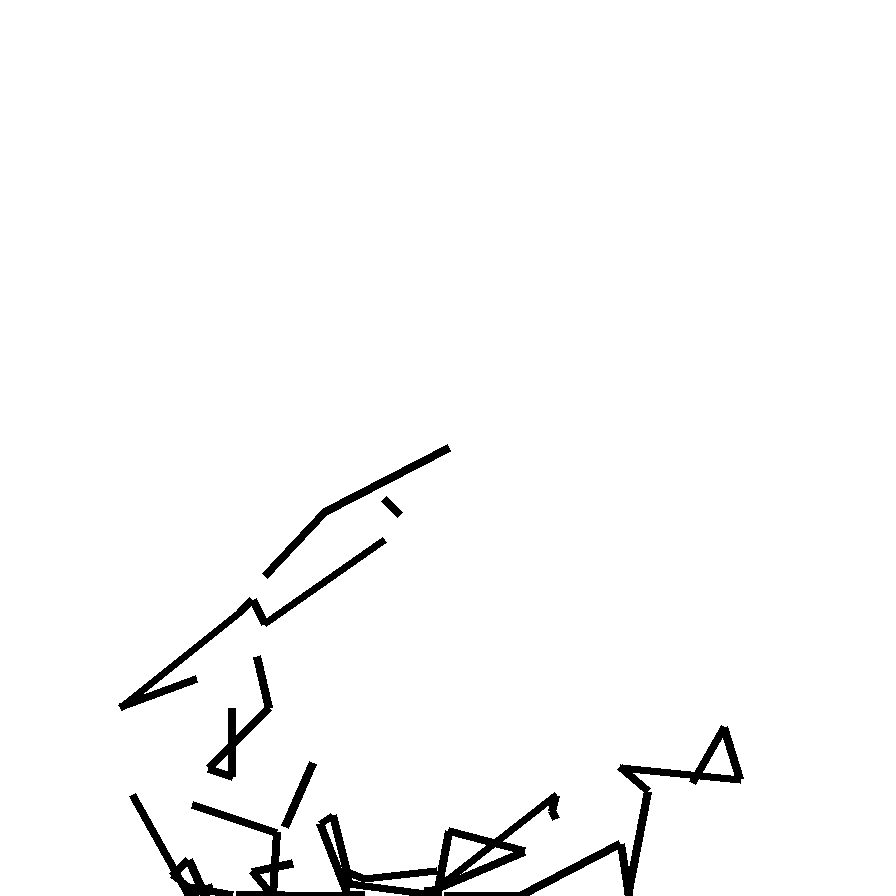
strokes=71, tokens=300, malformed=86 · native 224px
{kind=link}
strokes=12, tokens=300, malformed=264 · native 224px
{kind=link}
She smiled brightly at the surprise.

strokes=2, tokens=101, malformed=94 · native 224px
{kind=link}
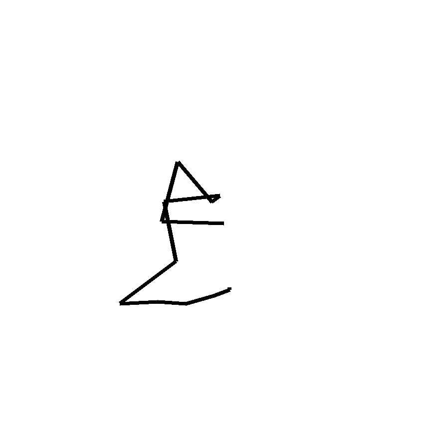
strokes=13, tokens=60, malformed=20 · native 224px
{kind=link}
I am thinking about a dog.
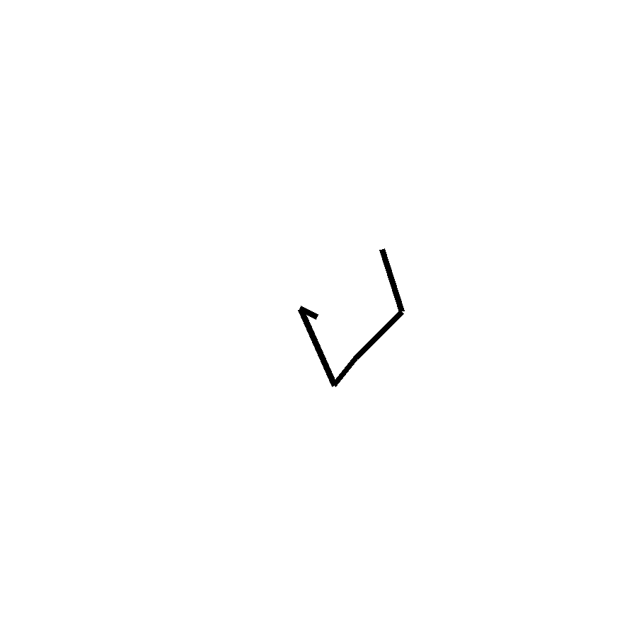
strokes=6, tokens=40, malformed=21 · native 224px
{kind=link}
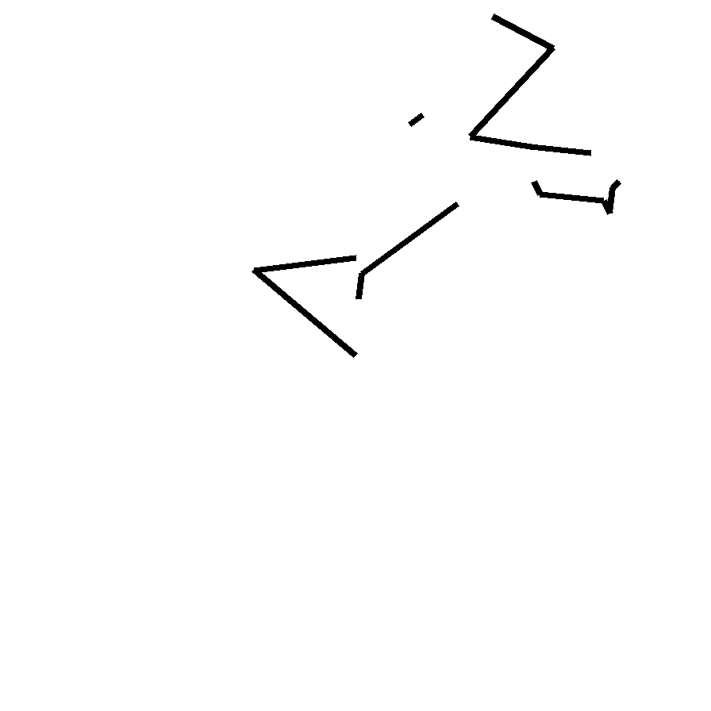
strokes=24, tokens=277, malformed=204 · native 224px
{kind=link}
Imagine a triangle inscribed in a circle.
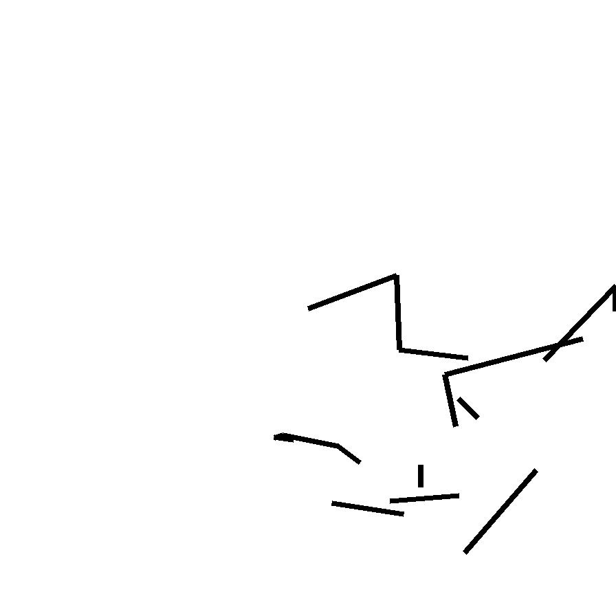
strokes=34, tokens=131, malformed=28 · native 224px
{kind=link}
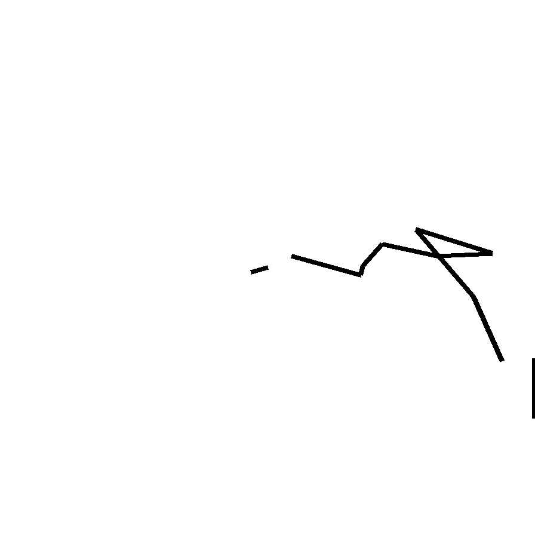
strokes=14, tokens=76, malformed=33 · native 224px
{kind=link}
When the storm hit, the village
strokes=2, tokens=17, malformed=10 · native 224px
{kind=link}
strokes=3, tokens=42, malformed=32 · native 224px
{kind=link}
Paris, the city of lights, is famous for the Eiffel
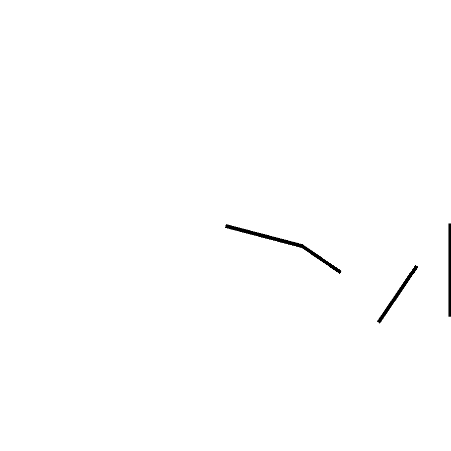
strokes=13, tokens=109, malformed=69 · native 224px
{kind=link}
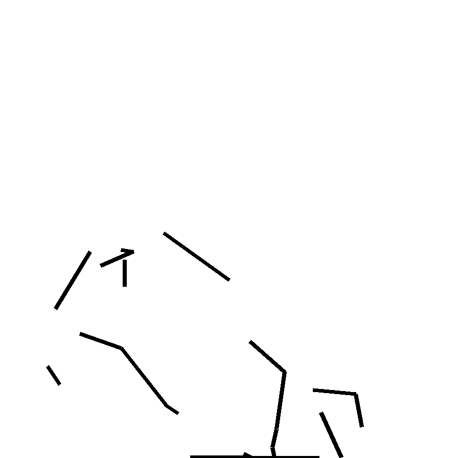
strokes=42, tokens=234, malformed=107 · native 224px
{kind=link}
What is 47 + 38? The answer is

strokes=0, tokens=300, malformed=298 · native 224px
{kind=link}
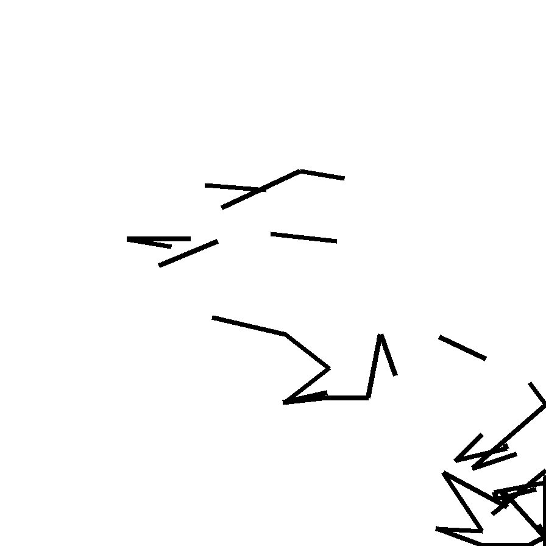
strokes=63, tokens=244, malformed=50 · native 224px
{kind=link}
She received the news and felt deeply
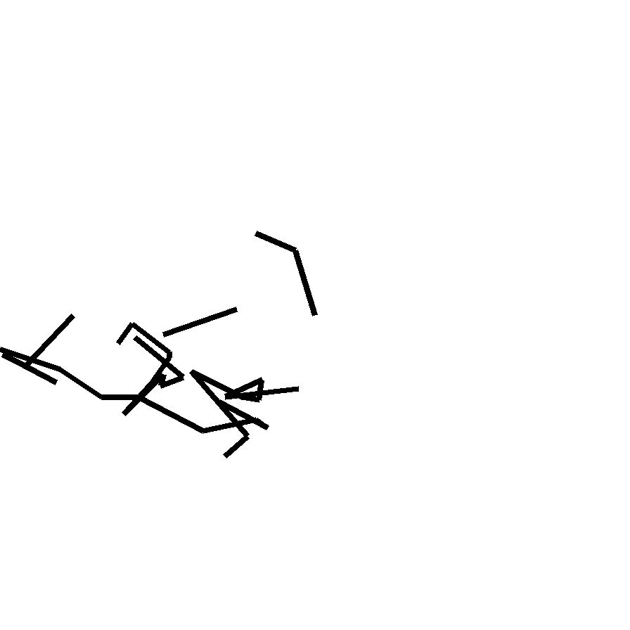
strokes=43, tokens=167, malformed=37 · native 224px
{kind=link}
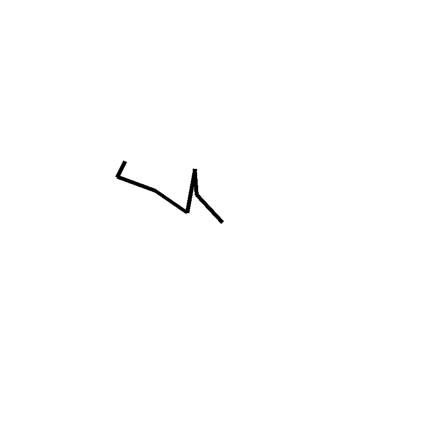
strokes=6, tokens=300, malformed=282 · native 224px
{kind=link}
def fibonacci(n):

strokes=0, tokens=300, malformed=300 · native 224px
{kind=link}
strokes=9, tokens=300, malformed=273 · native 224px
{kind=link}
I am picturing a smiling face.
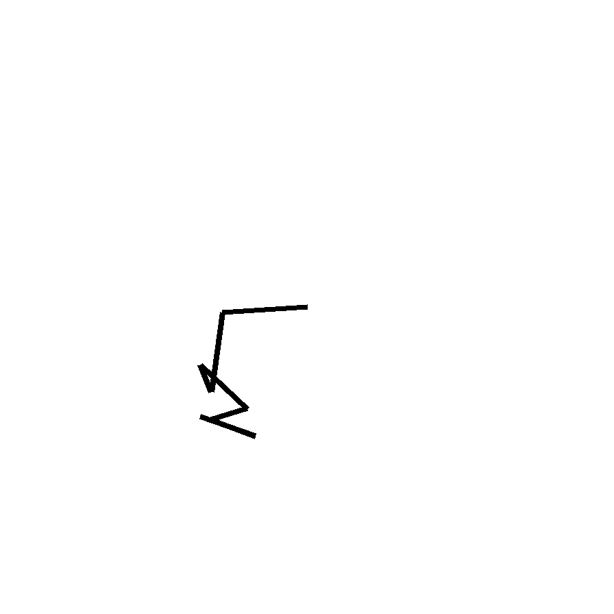
strokes=8, tokens=300, malformed=276 · native 224px
{kind=link}
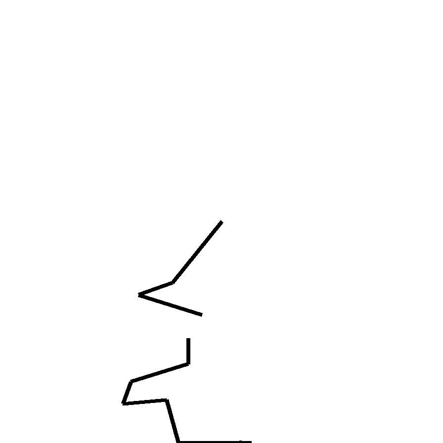
strokes=13, tokens=255, malformed=215 · native 224px
{kind=link}